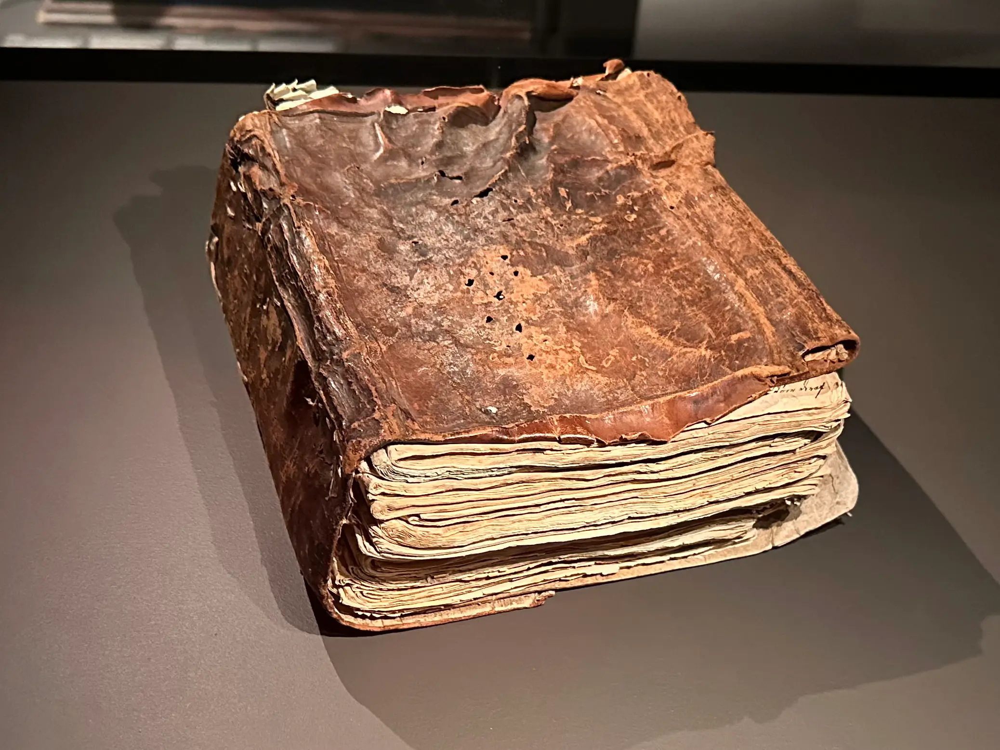
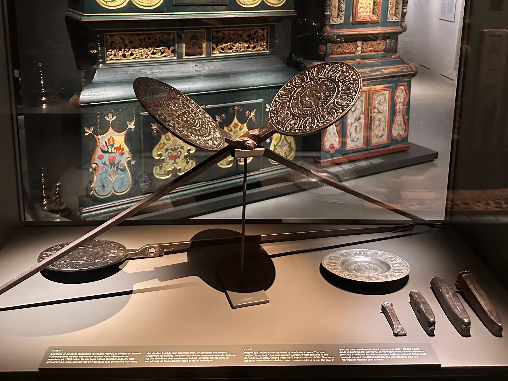
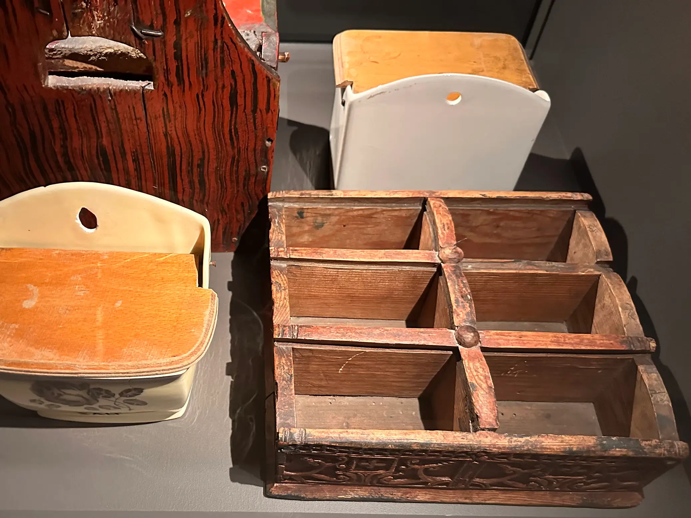

<!DOCTYPE html>
<html lang="en">

<head>
    <meta charset="UTF-8">
    <meta name="viewport" content="width=device-width, initial-scale=1.0">
    <title>Lillehammer Museum - Study</title>
    <link rel="stylesheet" href="styling.css">
    <link rel="icon" type="image/x-icon" href="favicon.ico">
    <link rel="apple-touch-icon" sizes="180x180" href="/apple-touch-icon.png">

</head>

<body>
    <div id="quiz-container">
    </div>

    <script>
        let userResponses = {};
        let deliveryPreference = "Auditory";
        let audio = null;
        let participantId = "";  // Store participant ID
        let audioLoadTimeout = null;  // Global timeout tracker
        let controlsExpanded = true;  // Track expand/collapse state
        let artefactStartTime = null;
        let currentArtefact = null;
        let artefactData = {}; // Global variable to store artefact data

        const questions = [
            /* Enable if you want the participants to choose their style of delivery.
            {
                text: "How do you best engage with museum content? (1/7)", options: [
                    { answer: "Listening to guides, podcasts, or audio tours.", delivery: "Auditory" },
                    { answer: "Reading text panels, labels, and descriptions.", delivery: "Text-based" }
                ]
            },*/
            {
                text: "How often do you visit museums? (1/6)", options: [
                    { answer: "As often as I can. I love discovering new things.", score: 5, profile: "Explorer" },
                    { answer: "Occasionally, but mostly when I’m bringing someone along.", score: 7, profile: "Facilitator" },
                    { answer: "Regularly, especially when there’s a relevant exhibit to my interests.", score: 4, profile: "Professional/Hobbyist" },
                    { answer: "When I travel, museums are an essential part of the experience.", score: 6, profile: "Experience Seeker" },
                    { answer: "Whenever I need a peaceful, inspiring break.", score: 3, profile: "Recharger" }
                ]
            },
            {
                text: "What is your main reason for visiting a museum? (2/6)", options: [
                    { answer: "To discover and learn something new.", score: 3, profile: "Explorer" },
                    { answer: "To help someone else engage with exhibits and contents.", score: 4, profile: "Facilitator" },
                    { answer: "Because it aligns with my professional/hobby interests.", score: 5, profile: "Professional/Hobbyist" },
                    { answer: "Because it’s a must-see cultural experience.", score: 6, profile: "Experience Seeker" },
                    { answer: "To relax and enjoy a peaceful environment.", score: 7, profile: "Recharger" }
                ]
            },
            {
                text: "What’s the first thing you usually do in a museum? (3/6)", options: [
                    { answer: "Wander and explore whatever catches my attention.", score: 6, profile: "Explorer" },
                    { answer: "Make sure my companions are engaged and having a good time.", score: 3, profile: "Facilitator" },
                    { answer: "Go straight to the exhibits related to my field of interest", score: 4, profile: "Professional/Hobbyist" },
                    { answer: "Check out the most famous pieces or take a photo.", score: 5, profile: "Experience Seeker" },
                    { answer: "Find a quiet spot to take it all in.", score: 7, profile: "Recharger" }
                ]
            },
            {
                text: "What kind of museum exhibit excites you the most? (4/6)", options: [
                    { answer: "Hands-on, interactive, or unexpected discoveries.", score: 4, profile: "Explorer" },
                    { answer: "Exhibits designed for all ages to enjoy together.", score: 6, profile: "Facilitator" },
                    { answer: "Niche, highly detailed content that aligns with my passion.", score: 7, profile: "Professional/Hobbyist" },
                    { answer: "Immersive, visually striking, or social media-worthy exhibits.", score: 3, profile: "Experience Seeker" },
                    { answer: "Quiet, atmospheric, or contemplative spaces.", score: 5, profile: "Recharger" }
                ]
            },
            {
                text: "What would make a museum visit disappointing for you? (5/6)", options: [
                    { answer: "If there’s nothing new to explore or learn.", score: 7, profile: "Explorer" },
                    { answer: "If my companion(s) didn’t enjoy it.", score: 5, profile: "Facilitator" },
                    { answer: "If the exhibits didn’t go deep enough into the subject.", score: 6, profile: "Professional/Hobbyist" },
                    { answer: "If there were no 'wow' moments.", score: 3, profile: "Experience Seeker" },
                    { answer: "If it was too loud or crowded.", score: 4, profile: "Recharger" }
                ]
            },
            {
                text: "How do you usually feel after a museum visit? (6/6)", options: [
                    { answer: "Excited about what I discovered and eager to learn more.", score: 5, profile: "Explorer" },
                    { answer: "Happy that my group enjoyed it and learned something.", score: 7, profile: "Facilitator" },
                    { answer: "Inspired to apply what I saw to my work or hobbies.", score: 3, profile: "Professional/Hobbyist" },
                    { answer: "Satisfied that I’ve checked off a great cultural experience.", score: 4, profile: "Experience Seeker" },
                    { answer: "Calm, refreshed, and maybe a little nostalgic.", score: 6, profile: "Recharger" }
                ]
            }
        ];

        const artefactDescriptions = {
            "Christine Storm Munchs Cookbook": {
                "A1": "Imagine a time when personal cookbooks were rare treasures, often crafted with love and care by women who were passionate about sharing the culinary delights of their households. Meet Christine Storm Munch, a remarkable figure from Vågå whose cookbook not only serves as a culinary guide but also offers a glimpse into the dining customs of the late 18th century.<br><br>This cookbook, bound lovingly, contains unique recipes, including a rather exotic turtle soup and a unique dish intriguingly named ‘Huskom Snusk.’ Each page is a time capsule, revealing how ingredients and flavors were selected and combined in an era where modern conveniences were absent. The terrine from the Herrebøe glazed earthenware factory in Halden, which graced the tables at Bø Farm, adds to this story. Its striking blue decorations, made from cobalt mined in Modum, were at the pinnacle of rococo style—an artistic statement of its time.<br><br>As you stand before this artefact, consider the connection between food and culture. What stories might these recipes unravel? How did they reflect the values and creativity of their creator? This artefact invites you to explore the world of historical flavors and the personal touch that transforming simple ingredients into beloved dishes would have brought to family gatherings. Let your imagination drive you into the heart of 18th-century dining, where every meal was a feast of tradition and every dish served carried the weight of history",
                "A2": "Imagine the warm glow of candlelight, a beautifully set table, and the enticing aroma of a carefully crafted dish wafting through the air. At the center of this domestic scene, you would find a remarkable artefact: Christine Storm Munch's cookbook, a treasure not just of culinary instructions, but a gateway into the 18th-century Norwegian home.<br><br>Crafted from glazed earthenware in the exquisite rococo style by the innovative Herrebøe factory in Halden, this terrine was more than a mere kitchen vessel. It was a statement piece, adorned with striking blues sourced from the cobalt mines in Modum, likely to captivate the guests at Bø Farm in Nord-Fran.<br><br>Christine Storm Munch, born in 1746, was much more than a homemaker; she was a pioneer of culinary literature in Norway. At a time when printed cookbooks were a luxury, she took it upon herself to gather favorite family recipes and bind them into her very own book. It’s a fascinating reminder of how knowledge was passed down through generations, through whispers and gatherings rather than printed pages.<br><br>Among the recipes in her collection are delicacies like turtle soup and the intriguing ‘Huskom Snusk,’ each representing not just the tastes of her era but a deeper connection to her family’s heritage. Imagine sharing this cookbook with a young aspiring chef or discussing its content with friends; it provides a wonderful opportunity to spark conversations about food, culture, and history.<br><br>This cookbook is not merely a collection of recipes but a multi-generational bridge connecting us to a time when every dish told a story, every gathering celebrated a bond. What recipes would you want to preserve for future generations? How do the dishes we prepare inform our understanding of each other? Exploring these questions can invite meaningful dialogue about history, culture, and the simple joy of sharing a meal.",
                "A3": "Christine Storm Munch's Cookbook is an intriguing artefact that embodies the culinary culture of Norway in the 18th century. Crafted from striking glazed earthenware, this terrine showcases the rococo style, a contemporary design of its time that infused elegance into everyday dining. The craftsmanship at the Herrebøe glazed earthenware factory in Halden reflects an innovative spirit, using cobalt blue hues derived from the mines in Modum that were notably vibrant and modern for their era.<br><br>The personal story behind this cookbook adds another layer of fascination. Christine Storm Munch, born in 1746, was a pioneering figure in Northern culinary traditions. At a time when printed cookbooks were scarce, Christine took the initiative to gather her favorite recipes, reflecting her role not only as a homemaker but also as a connoisseur of food. She meticulously bound these recipes into a collection, which includes curious delicacies such as turtle soup and the whimsical 'Huskom Snusk'—a testament to the eclectic and adaptive nature of early Norwegian cuisine.<br><br>The cookbook is more than just a collection of recipes; it is a window into the social fabric of its time, revealing how food preparation was an integral part of life. It demonstrates the interplay between domesticity and community, as well as the importance of culinary traditions being passed down through generations. For anyone with a deep-seated interest in food history, this artefact offers a rich narrative to explore culinary practices, stylistic influences in tableware, and the evolution of Norwegian gastronomy through the lens of individual's contributions during a transformative period.",
                "A4": "Step into the culinary world of the 18th century with Christine Storm Munch's remarkable cookbook, a gem of domestic life and gastronomic exploration. Crafted from beautifully glazed earthenware, this item not only showcases the rococo style that was cutting-edge for its time but also tells the story of innovation in rural Norway.<br><br>Picture the vibrant dining table at Bø Farm in Nord-Fran, where dishes adorned in intricate blue designs—sourced from Modum's cobalt mines—would catch the eye, elevating the meal's enjoyment. But there’s more to this terrine than meets the eye. In a time when printed cookbooks were few and far between, Christine took it upon herself to collect and bind cherished recipes into a book—a treasure trove of culinary creativity.<br><br>This fascinating cookbook belonged to a woman of spirit and intellect. Christine was not just a homemaker; she was influenced by the flavors and culinary techniques of travelers and guests who frequented the parsonage in Vågå. Within these pages lie recipes ranging from the exotic turtle soup to the intriguingly titled ‘Huskom Snusk’, a hearty dish of pork belly combined with fresh vegetables and herbs—perfect to accompany the local specialties of the time.<br><br>Imagine the tantalizing aromas and lively chatter that filled her home as she experimented with new ingredients like lemons and unusual spices brought from afar. The exchange of recipes and culinary tips was as vibrant a social exchange as the traditions that shaped her family’s dining experiences. Here, in her bound collection, you can almost hear the clinks of glasses, the laughter of gathering friends, and the joy of sharing good food at the heart of community life.<br><br>This artefact invites you to savor history, not just by seeing it but by feeling the pulse of a time when kitchens were both laboratories and gathering spaces—bubbling with creativity and connection. What stories might spill forth from the pages of Christine’s cookbook? Come and discover these flavors of the past at our museum!",
                "A5": "Imagine the rustic charm of a dining table adorned with a beautifully crafted terrine from the Herrebøe glazed earthenware factory in Halden. This delightful piece, with its delicate rococo styling, whispers stories from a time when each mealtime was a treasure trove of flavors and traditions.<br><br>The serene blues, derived from cobalt mines in Modum, captivate the eye and evoke a sense of calm, making the terrine not just a vessel for food, but a centerpiece of elegance on the table at Bø Farm in Nord-Fran. Picture Christine Storm Munch, a creative and resourceful woman who lived between 1746 and 1825, collecting recipes and binding them into a cookbook, an act that was both personal and visionary in an era when printed cookbooks were a rarity.<br><br>Her cookbook offers us a glimpse into her world, featuring intriguing recipes such as turtle soup and the curious dish known as ‘Huskom Snusk.' Through these pages, we find an intimate connection to the past, a reminder of the care and craftsmanship that went into culinary traditions, which continue to nourish and inspire.<br><br>This artefact invites you to reflect on how food can connect us across time, creating shared moments of tranquility and appreciation for the artistry that defines our shared heritage. Engaging with this piece, we not only celebrate the beauty of its design but also immerse ourselves in the rich tapestry of Norwegian culinary history.",
                "A6": "Imagine a time when cookbooks were not just common kitchen companions, but rare treasures that bridged generations and cultures! The 'Christine Storm Munch Cookbook' is exactly that—a remarkable collection of culinary wisdom belonging to Christine Storm Munch, a pioneering figure in the culinary arts of the 18th century.<br><br>Crafted from glazed earthenware, this cookbook hails from the celebrated Herrebøe factory in Halden, known for its striking rococo style which represented modern elegance of its time. The intricate cobalt blue decorations—sourced from the rich cobalt mines of Modum—would have made this terrine a stunning centerpiece at the grand table of Bø Farm in Nord-Fran.<br><br>Christine, who lived from 1746 to 1825, transformed her culinary experiences and inspiration from travelers, letters, and her own keen observations into a remarkable collection of recipes. During a time when printed cookbooks were a rarity, many relied on personal collections—Christine meticulously gathered and bound her recipes into this single, cherished volume.<br><br>Among the delicacies in her repertoire are intriguing dishes like turtle soup, which was once considered a delicacy for the elite, and 'Huskom Snusk,' a rustic dish featuring bacon, vegetables, and fragrant herbs, perfect served alongside smoked herring. This cookbook not only captures recipes but also reflects the vibrant cultural exchanges that flavored the meals of early Norwegian society, illustrating how even remote farming households accessed exotic ingredients like lemons, almonds, and spices from afar.<br><br>Exploring this cookbook offers a delightful glimpse into a bygone era—a time when the art of cooking was not just about sustenance, but about community, celebration, and the spirit of innovation in the kitchen.",
                "A7": "Glazed Earthenware.<br><br>The rococo style products made by the Herrebøe glazed earthenware factory in Halden were very modern in their day. Decorated with blues from the cobolt mines in Modum, the terrine would have stood out on the table at Bø Farm in Nord-Fran. Printed cookbooks were rare, but many made their own. Christine Storm Munch (1746-1825), the person’s wife in Vågå, collected recipe and had them bound as a book. It includes turtle soup and ‘Huskom Snusk’."
            },
            "Apostle Irons": {
                "B1": "Imagine yourself in the bustling kitchens of the 1700s, where the aroma of baking fills the air and the chatter of friends and family rings out. Here in Lillehammer Museum, we present a fascinating artefact known as the Apostle Iron. This unique culinary tool was used to create wafers, exquisite cakes that played a central role in celebration and ritual during that time.<br>br>Originating from Nord-Gudbrandsdalen, near the ironworks in Lesja, these irons are distinguished by their intricate design—a row of twelve apostles encircling the central emblem of the lion of Judah. This imagery harkens back to a 17th-century pewter dish from Nuremberg, Germany, showcasing a fascinating blend of cultural influences. Delve into the motifs depicted on these wafers, which often featured elements from both British and Danish-Norwegian coats of arms—think of the majestic unicorn alongside Norway's proud eagle!<br><br>As you explore the Apostle Iron, ponder the delightful questions it raises: What gatherings would have taken place around these cakes? How did the community come together to celebrate? The stories embedded in this artefact are endless, inviting you to embark on a journey through history, one delicious bite at a time. What adventures await in the kitchen of old? Discover for yourself!",
                "B2": "Imagine stepping into a tradition steeped in history with the fascinating Apostle Irons, a unique piece of craftsmanship from the 1700s. This remarkable artefact gives us a glimpse into the world of celebratory cakes, especially the delicate wafers that were integral to religious ceremonies and special occasions, often likened to communion wafers used in the Christian Eucharist.<br><br>Crafted in the picturesque Nord-Gudbrandsdalen, near the bustling ironworks of Lesja, these irons were used to create wafer cakes adorned with intricate designs. Picture a family gathering around a table, the sweet aroma of freshly baked wafers filling the air, each piece carefully pressed with images of the apostles, echoing a pewter dish from 17th-century Nuremberg that likely inspired their design.<br><br>What makes this artefact truly captivating are the heraldic elements imprinted on some wafers, reminiscent of the royal coats of arms from Britain and Denmark-Norway. Imagine discovering a wafer featuring the majestic British unicorn alongside the lion—symbolic of power and nobility—blending beautifully with the Norwegian national coat of arms. This detail invites engaging conversations about the connections between cultural traditions, artistry, and the shared history of nations.<br><br>As the stories around the Apostle Irons unfold, you'll uncover not just a tool for baking but a centerpiece of community celebration, linking generations of families through the timeless joy of sharing food and stories. This artefact isn’t just about the past; it’s a bridge to understand how culinary practices and craftsmanship reflect societal values and shared experiences.",
                "B3": "Imagine the tantalizing aroma of fresh wafers wafting through the air at a 1700s celebration. These delicate, crisp confections, known as wafers, enjoyed a distinct place in festive gatherings, particularly those linked to religious communion. The term 'wafers' itself is derived from 'communion wafers,'' revered in the Christian Eucharist, highlighting their spiritual significance.<br><br>The Apostle Irons, integral to creating these celebratory wafers, were crafted in the heart of Nord-Gudbrandsdalen, near the notable ironworks of Lesja. The design, featuring a row of apostles, likely draws inspiration from an exquisite 1600s pewter dish hailing from Nuremberg, Germany, a testament to the cross-cultural influences of the era.<br><br>Notably, these wafers sometimes showcased heraldic motifs that echo the national symbols of both Britain and the Danish-Norwegian union. The artistry included representations of revered figures like the British unicorn and lion alongside the Norwegian coat of arms, illustrating the blend of aesthetic and political identity of the time.<br><br>Intrigued by the technical and cultural mastery of these irons? There's a wealth of historical context to explore—consider how the craftsmanship reflects the craftsmanship of the period and the significant role these items played in both domestic and ceremonial life. Whether you're examining the ironwork techniques or the culinary practices of the past, the Apostle Irons serve as a rich entry point into a fascinating world of tradition and artistry.",
                "B4": "Imagine stepping into the world of the 1700s, where every celebration was marked by the delicate crunch of a wafer, designed not just as a treat but as a work of art. The Apostle Irons you see here were the creators of these beautiful wafers, intricately stamped with designs that are as rich in history as they are in flavor.<br><br>Crafted in Nord-Gudbrandsdalen, near Lesja's ironworks, these irons reflect a cultural bridge—a connection between local artistry and the European traditions that influenced them. The rows of apostles depicted on the wafers might echo the designs found on a pewter dish from Nuremberg, Germany, showcasing how trade and artistry intertwined across borders.<br><br>Not just a matter of aesthetics, these wafers often incorporated heraldic symbols from British and Danish-Norwegian coats of arms, celebrating identity and tradition in every bite. Picture a gathering of family and friends around the table, sharing stories and laughter, breaking the wafers adorned with such significant motifs—the unicorn and lion of Britain alongside Norway's national heraldry.<br><br>As you engage with this artefact, let your imagination take flight to the festivities of the past, where these wafers transformed every gathering into a delightful spectacle marked by art, culture, and community spirit. This isn't merely about what was eaten; it's about the stories and celebrations they brought to life, a true testament to the rich tapestry of Norwegian heritage.",
                "B5": "Imagine a time when family gatherings were steeped in tradition and the air was scented with freshly baked cakes. One remarkable artefact encapsulates this warm, inviting spirit: the Apostle Irons. Designed to create celebratory wafers, these unique tools harken back to the 1700s, a period when communities came together to share in life's joys.<br><br>Crafted near the lush landscapes of Nord-Gudbrandsdalen, these irons became key to making wafer cakes that were often served at significant occasions, from holidays to church events. The term “wafers” itself evokes the sacredness of communion wafers used in Christian ceremonies, highlighting the deep connections between culinary practices and cultural rituals.<br><br>Each Apostle Iron features a remarkable design—a row of apostles inspired by a 17th-century pewter dish from Nuremberg. Such intricate patterns invite reflection on the artistry of the past, merging the spiritual and the everyday. As you observe these artefacts, let your mind wander back to the warm embrace of familial gatherings, where each bite of a wafer was a moment of togetherness, steeped in history.<br><br>Not just a treat for the palate, some wafers bore unique heraldic symbols from British and Danish-Norwegian lineage, including the mythical unicorn and lion, alongside Norway’s own coat of arms. These designs were not merely for decoration; they encapsulated stories of identity, heritage, and the pride of communities.<br><br>Take a moment to appreciate the Apostle Irons—in their beauty and function, they remind us of the simple yet profound connections that nourish our spirits, just like the cakes they once helped create.",
                "B6": "Imagine a time when the art of celebration took shape in the form of delicate baked treats. The Apostle Irons, crafted in the picturesque Nord-Gudbrandsdalen during the 1700s, played a significant role in this tradition. These unique cake molds showcase the intricate craftsmanship of local blacksmiths, who heated the iron and carefully hammered in detailed designs.<br><br>The Apostle Irons bear a striking resemblance to communion wafers, often seen in Christian rituals, symbolizing a connection to spirituality and community. Each iron features a row of twelve apostles, inspired by a decorative pewter dish from 17th-century Nuremberg, blending cultural motifs across borders. As you look closely, you can spot fascinating heraldic elements, including the regal British unicorn and lion alongside the Norwegian coat of arms, revealing the complex interplay of cultural influences in a single creation.<br><br>These artistic cake molds also reflect the social practices of their time, where sharing baked goods was integral to celebrations and gatherings. So, as you explore this remarkable artefact, consider the stories of togetherness and festivity it has witnessed through the centuries, and the artistry that brought sweet creations to life on special occasions.",
                "B7": "Cakes.<br><br>Wafers are the most distinguished of celebratory cakes. The term ‘wafers’ is derived from ‘communion wafers’, which are used in the Christian Eucharist. Apostle irons were popular in the 1700s. They were made in Nord-Gudbrandsdalen near the ironworks in Lesja. The row of apostles may have been inspired by a pewter dish from the 1600s made in Nuremberg, Germany. Some wafers have heraldic elements from the British and Danish-Norwegian national coats of arms. Local variants include the British unicorn and lion together with the Norwegian national coat of arms."
            },
            "Spice Box": {
                "C1": "Imagine wandering into a bustling kitchen of the 1700s, where the air is filled with tantalizing aromas and the vibrant colors of spices are on display. This exquisite spice box, a prized possession in many households, is a window into a world shaped by global trade and culinary exploration. Originating from Asia, these exotic spices were carefully imported into Copenhagen, serving as the heart of flavor in the kitchens spread throughout the double monarchy.<br><br>Can you picture the excitement of a home cook as they opened the numerous drawers of this spice box, revealing treasures such as cinnamon, nutmeg, and the alluring scent of vanilla? Each spice is not just an ingredient; it carries with it stories of distant lands, the labor of spice traders, and perhaps even whispers of their journeys across oceans.<br><br>Hanna Winsnes’s celebrated cookbook from 1845 brings these flavors to life, capturing the essence of culinary creativity with a variety of spices like cardamom and cayenne pepper. What might it have tasted like when the warm, fragrant notes of saffron mingled with freshly baked goods? Each meal became a canvas, painted with spices that transformed mundane dining into a feast of discovery and delight.<br><br>A humble box like this was not just a storage solution; it signified a culinary adventure, bringing the world’s flavors to your table.Close your eyes and imagine gathering with family and friends, sharing stories as you sprinkle a dash of this or a hint of that, bringing to life the rich tapestry of history and culture through the simple act of cooking together.What dishes would you create with these extraordinary spices?",
                "C2": "Step into the aromatic world of the Spice Box, a delightful treasure that reveals the culinary wonders of the past! This charming artefact was once a vital component in kitchens across the double monarchy, where every meal became an opportunity for deft flavoring. Imported from the exotic lands of Asia in the 1700s, spices like cinnamon, nutmeg, and saffron transformed everyday cooking into a tantalizing adventure.<br><br>Imagine the scene: a bustling Copenhagen marketplace where spices were traded and then distributed throughout, each spice tightly nestled in its own designated drawer within the spice box. A well-stocked kitchen was a reflection of skill and hospitality, with notable recipes, such as those found in Hanna Winsnes’s 1845 cookbook, relying on these vibrant ingredients to impress family and friends alike.<br><br>Discussing the unique flavors of cardamom and cayenne pepper at mealtime could spark engaging conversations among family and friends, allowing each person to delve into their culinary curiosities. Did you know that having salt and pepper shakers on the dining table was considered standard practice back then? This small detail offered a simple yet significant way to customize meals, linking the past to the rich tapestry of our dining traditions today.<br><br>As you explore the intricacies of the Spice Box, think of the stories it could tell and the dinner tables it graced.Engaging with this artefact invites you to cherish the flavors and discussions that have shaped our culinary heritage over generations.",
                "C3": "Imagine stepping into the world of culinary innovation during the 1700s, where exotic spices were as coveted as gold. This spice box, a treasured kitchen companion, opened up a universe of flavors for those who understood the value of culinary artistry. It served not just as a tool for cooking but as a symbol of sophistication in the double monarchy of Denmark-Norway.<br><br>By the mid- 18th century, spices such as cinnamon, nutmeg, and saffron were making their way into kitchens from afar, arriving in Copenhagen before cascading through royal courts and bustling markets.Each drawer of this beautifully crafted spice box held the potential to awaken the senses and transform a simple dish into a royal feast.<br><br>Take a moment to reflect on Hanna Winsnes’s 1845 cookbook, which sang praises of these spices, urging cooks to incorporate cardamom, pepper, and even cayenne pepper into their recipes.Such writings not only serve as a historical touchpoint but illustrate the culinary practices that shaped everyday life.The presence of this spice box in a kitchen underscored a notion of refined taste and knowledge of gastronomy that would influence generations.<br><br>As we delve into the roots of culinary tradition, consider how our modern approach to flavors and spices carries echoes of these historical practices.This spice box stands testament to a time when the art of cooking was revered and celebrated, inviting you to explore the deeper connections between cuisine, culture, and craftsmanship.",
                "C4": "Imagine opening a beautifully crafted spice box, its myriad of drawers filled with aromatic treasures from far-off lands. This artisan piece, a hallmark of culinary sophistication, tells a tantalizing tale of the 1700s, where explorers braved the seas to bring exotic spices from Asia to the bustling streets of Copenhagen. From there, these flavors permeated through the double monarchy, adding depth to the kitchens of nobility and common folk alike.<br><br>Every cook worth their salt would arrange a spice box with compartments dedicated to the finest spices—cinnamon, nutmeg, and pepper among them—each one a key to unlocking the gastronomic delights of the era. Hanna Winsnes, a pioneer of Norwegian cooking, captured this vibrant spice tradition in her 1845 cookbook, encouraging a culinary revolution that infused everyday meals with the rich flavors of cardamom, ginger, and saffron.<br><br>Imagine the allure of an evening meal where the enticing scents of cardamom and cayenne filled the air, each dish a reflection of the cook's creativity and skill. In those times, it was not just about sustenance; it was an artistic expression, a chance to impress guests with not just the food, but the experience of dining itself.<br><br>So next time you encounter a spice box, think of the grand kitchens, bustling markets, and the global stories behind each meticulously filled drawer.How would you have used these spices to create your own culinary masterpieces? Your adventure in flavor awaits!",
                "C5": "Picture yourself in a cozy kitchen of the 1700s, where the air is rich with the scents of exotic spices. This exquisite spice box, with its many drawers, was an essential part of any well-equipped kitchen during that time. It held a treasure trove of flavors, each waiting to transform a simple meal into a culinary masterpiece.<br><br>Imagine the vibrant spices imported from distant lands—cinnamon, nutmeg, vanilla, and saffron—each telling a story of adventure and trade. In those days, Copenhagen served as a bustling hub, bringing these exotic ingredients to the heart of Scandinavia. This spice box symbolizes a time when spice was not just seasoning but a luxury that could elevate a dish, making it a reflection of one’s status and sophistication.<br><br>In 1845, Hanna Winsnes, a prominent figure in Norwegian culinary history, penned her cookbook, mentioning the meticulous use of spices like cardamom and cayenne pepper in her recipes, revealing the intricate art of cooking that thrived back then.It’s fascinating to think about the atmosphere in which families gathered around the dining table, not just to share a meal but to indulge in flavors that sparked joy and conversation.<br><br>As you admire this beautiful artifact, let it transport you to a different era—where each dish was a celebration, and every spice box was a gateway to cultural exchange and culinary creativity.The harmony of colors, textures, and scents of these spices creates a nostalgic ambiance, inviting reflection on the profound role of flavor in our shared human experience.",
                "C6": "Imagine the bustling kitchens of the 18th century, where the air is infused with the rich, seductive aromas of exotic spices—gifts from afar that can transform humble dishes into culinary masterpieces. This spice box, once a staple in Danish homes, embodies a world of flavor and cultural exchange.<br><br>As you delve into its intricacies, picture the vibrant trade routes stretching from Asia to Copenhagen, where spices were not just ingredients, but currency in the kitchens of a society eager for the extraordinary. By the 1700s, kitchens proudly displayed these splendid boxes, each drawer holding fragrant treasures like cinnamon, nutmeg, and saffron. Renowned cookbooks, such as that of Hanna Winsnes from 1845, reveal how these spices played vital roles in both everyday meals and festive celebrations.<br><br>Envision the table set with glass shakers of salt and pepper, twinkling like tiny jewels, as families gathered to share stories and sustenance. The spice box is not just a container; it tells the story of a connected world, where each herb and spice carries the legacy of exploration and the human desire to savor life's flavors.",
                "C7": "Spices.<br><br>Exotic spices came from Asia. In the 1700s, they were imported into Copenhagen and from there spread through the double monarchy. Every good kitchen had a spice box with numerous drawers of spices for cooking and baking. Hanna Winsnes’s cookbook from 1845 mentions spices such as cinnamon, nutmeg, vanilla, cardamom, allspice, pepper, ginger, saffron and cayenne pepper. Having salt and pepper shakers on the table at mealtimes was common."
            }
        };

        // Latin Square Configuration
        const latinSquare = [
            ["Adapted", "General", "Original"],
            ["General", "Original", "Adapted"],
            ["Original", "Adapted", "General"]
        ];

        // Helper to get Artefact Assignment
        function getArtefactAssignment(participantIndex) {
            const order = latinSquare[participantIndex % 3];
            return {
                "Christine Storm Munchs Cookbook": order[0],
                "Apostle Irons": order[1],
                "Spice Box": order[2]
            };
        }

        // Helper to Map Profiles to Numbers
        function getProfileNumber(profile) {
            const profileMapping = {
                "Explorer": 1,
                "Facilitator": 2,
                "Professional/Hobbyist": 3,
                "Experience Seeker": 4,
                "Recharger": 5
            };
            return profileMapping[profile] || 7;
        }

        function renderParticipantScreen() {
            let quizContainer = document.getElementById("quiz-container");

            if (!quizContainer) {
                console.error("❌ Error: quiz-container not found!");
                return;
            }

            quizContainer.innerHTML = `
        <div class="artefacts-container">
            <h1>Welcome to Lillehammer Museum 🏛️ </h1>
            <h3>Enter the Participant ID to continue</h3>
            <input type="text" id="participant-input" placeholder="Enter Participant ID" style="font-size: 1.2em; padding: 10px; margin: 10px;">
            <button onclick="submitParticipantId()" class="nav-button">Start</button>
        </div>
    `;
        }

        function submitParticipantId() {
            const inputField = document.getElementById("participant-input");
            participantId = inputField.value.trim();

            // Regular expression to validate Participant ID format (p1, p2, p3, etc.)
            const validIdPattern = /^p[1-9]\d*$/; // Ensures p0 is not allowed

            if (!participantId) {
                alert("Please enter a valid Participant ID.");
                return;
            }

            if (!validIdPattern.test(participantId)) {
                alert("Invalid Participant ID format. No upper case letters are allowed. Please enter it as 'p1', 'p2' or 'p3', etc.");
                return;
            }

            console.log(`✅ Participant ID set: ${participantId}`); // Log the ID for debugging

            // Render the welcome screen after successful ID entry
            renderWelcomeScreen();
        }

        function renderWelcomeScreen() {
            let quizContainer = document.getElementById("quiz-container");

            if (!quizContainer) {
                console.error("❌ Error: quiz-container not found!");
                return;
            }

            quizContainer.innerHTML = `
        <div class="card">
            <h1 id="quiz-title">Welcome to Lillehammer Museum 🏛️ </h1>
            <h3 id="pleaseAnswerQuestionsText">Please take a moment to answer a few questions so we can personalize your museum experience ✨</h3>
            <button onclick="renderQuiz()" class="nav-button">Start</button>
        </div>
    `;
        }

        function renderQuiz() {
            let quizContainer = document.getElementById("quiz-container");

            if (!quizContainer) {
                console.error("❌ Error: quiz-container not found!");
                return;
            }

            quizContainer.innerHTML = `
        <div id="quiz"></div>
        <h3 id="result"></h3>
    `;

            renderQuestion(0); // Start the quiz with the first question
        }

        function renderQuestion(questionIndex) {
            const quizDiv = document.getElementById("quiz");
            quizDiv.innerHTML = ""; // Clear previous question

            if (questionIndex >= questions.length) {
                assignProfile();
                return;
            }

            const currentQuestion = questions[questionIndex];

            // Create and render the Previous Button card (only if not on the first question)
            if (questionIndex > 0) {
                let prevButtonCard = document.createElement("div");
                prevButtonCard.className = "card";

                let prevButton = document.createElement("button");
                prevButton.className = "nextprev-button";
                prevButton.innerText = "⬅️ Previous Question";
                prevButton.onclick = () => renderQuestion(questionIndex - 1);

                prevButtonCard.appendChild(prevButton);
                quizDiv.appendChild(prevButtonCard);
            }

            // Render the Question Card
            const questionDiv = document.createElement("div");
            questionDiv.className = "card";
            questionDiv.innerHTML = `<h3>${currentQuestion.text}</h3>`;

            const optionsContainer = document.createElement("div");
            optionsContainer.className = "options-container";

            // Create the Next Button card, hidden by default
            let nextButtonCard = document.createElement("div");
            nextButtonCard.className = "card";
            nextButtonCard.style.display = "none"; // Hidden until answer is selected

            let nextButton = document.createElement("button");
            nextButton.className = "nextprev-button";
            nextButton.innerText = "Next Question ➡️";
            nextButton.onclick = () => renderQuestion(questionIndex + 1);

            nextButtonCard.appendChild(nextButton);

            // Render answer options and check for previous selection
            currentQuestion.options.forEach((option, optIndex) => {
                const button = document.createElement("button");
                button.className = "option-button";
                button.innerText = option.answer;

                // Check if this option was previously selected
                if (userResponses[questionIndex] && userResponses[questionIndex].answer === option.answer) {
                    button.classList.add("selected");
                    nextButtonCard.style.display = "block"; // Show the Next button if already answered
                }

                button.onclick = () => {
                    selectAnswer(questionIndex, optIndex, button, nextButtonCard); // Pass nextButtonCard for control
                };

                optionsContainer.appendChild(button);
            });

            questionDiv.appendChild(optionsContainer);
            quizDiv.appendChild(questionDiv);
            quizDiv.appendChild(nextButtonCard);
        }


        function selectAnswer(questionIndex, optionIndex, selectedButton, nextButtonCard) {
            let selectedOption = questions[questionIndex].options[optionIndex];

            // Toggle selection/deselection logic
            if (userResponses[questionIndex] === selectedOption) {
                delete userResponses[questionIndex];
                selectedButton.classList.remove("selected");
                nextButtonCard.style.display = "none"; // Hide Next button if deselected
                return;
            }

            // Store the selected answer
            userResponses[questionIndex] = selectedOption;

            // Update delivery preference if applicable
            if (selectedOption.delivery) {
                deliveryPreference = selectedOption.delivery;
                console.log(`✅ Delivery Preference Updated: ${deliveryPreference}`);
            }

            // Remove "selected" class from all buttons in this question
            const optionButtons = selectedButton.parentElement.querySelectorAll(".option-button");
            optionButtons.forEach(button => button.classList.remove("selected"));

            // Add "selected" class to the clicked button
            selectedButton.classList.add("selected");

            // Show the Next button card after selecting an answer
            nextButtonCard.style.display = "block";
        }

        function checkCompletion() {
            if (Object.keys(userResponses).length === questions.length) {
                assignProfile();
            }
        }

        function assignProfile() {
            let scores = { "Explorer": 0, "Facilitator": 0, "Professional/Hobbyist": 0, "Experience Seeker": 0, "Recharger": 0 };

            Object.values(userResponses).forEach(response => {
                if (response.profile) {
                    scores[response.profile] += response.score;
                }
            });

            let assignedProfile = Object.keys(scores).reduce((a, b) => scores[a] > scores[b] ? a : b);

            showArtefacts(assignedProfile); // Skip final message and go straight to artefacts
        }

        function clearSelections() {
            userResponses = {}; // Clear all stored responses
            deliveryPreference = "Text-Based"; // Reset delivery preference to default
            document.getElementById("result").innerHTML = ""; // Clear the result display
            renderQuiz(); // Re-render quiz with cleared state
        }

        function showArtefacts(profile) {
            if (audio) {
                audio.pause();
                audio.currentTime = 0;
                audio = null;
            }

            let deliveryMode = deliveryPreference === "Auditory" ? "Auditory" : "Text-Based";

            document.getElementById("quiz-container").innerHTML = `
    <div class="artefacts-container">
        <h1>Lillehammer Museum - Artefacts</h1>
    </div>

    <div class="artefacts-container">
        <h2>Select an Artefact:</h2>
        <div class="artefact-container">
            <div class="card artefact-card" onclick='showArtefactDetails("Christine Storm Munchs Cookbook", "${profile}")'>
                
                <h3>Christine Storm Munchs Cookbook</h3>
            </div>
            <div class="card artefact-card" onclick='showArtefactDetails("Apostle Irons", "${profile}")'>
                
                <h3>Apostle Irons</h3>
            </div>
            <div class="card artefact-card" onclick='showArtefactDetails("Spice Box", "${profile}")'>
                
                <h3>Spice Box</h3>
            </div>
        </div>
    </div>
`;

        }

        function showArtefactDetails(artefact, profile) {
            // Ensure the page scrolls to the top when switching artefacts
            window.scrollTo({ top: 0, behavior: 'smooth' });

            if (audio) {
                audio.pause();
                audio.currentTime = 0;
                audio = null;
            }

            const participantIndex = parseInt(participantId.replace(/\D/g, '')) - 1;
            const assignments = getArtefactAssignment(participantIndex);
            let descriptionKey = "A7"; // Default to original
            let descriptionType = "Original"; // Default type

            if (artefact === "Christine Storm Munchs Cookbook") {
                descriptionKey = assignments["Christine Storm Munchs Cookbook"] === "Adapted" ? `A${getProfileNumber(profile)}` :
                    assignments["Christine Storm Munchs Cookbook"] === "General" ? "A6" : "A7";
                descriptionType = assignments["Christine Storm Munchs Cookbook"];
            } else if (artefact === "Apostle Irons") {
                descriptionKey = assignments["Apostle Irons"] === "Adapted" ? `B${getProfileNumber(profile)}` :
                    assignments["Apostle Irons"] === "General" ? "B6" : "B7";
                descriptionType = assignments["Apostle Irons"];
            } else if (artefact === "Spice Box") {
                descriptionKey = assignments["Spice Box"] === "Adapted" ? `C${getProfileNumber(profile)}` :
                    assignments["Spice Box"] === "General" ? "C6" : "C7";
                descriptionType = assignments["Spice Box"];
            }

            const artefactDescription = artefactDescriptions[artefact][descriptionKey];

            // Initialize artefact data
            artefactStartTime = Date.now();
            currentArtefact = artefact;
            artefactData = {
                participantId: participantId,
                artefact: artefact,
                descriptionType: descriptionType,
                profile: profile,
                timeSpentSeconds: 0,
                tellMeMoreClicked: 0,
                deliveryMode: deliveryPreference === "Auditory" ? "Auditory" : "Text-Based",
                playedAudio: "No" // Default to "No" for new artefact
            };
            // Assign the artefact-specific data
            let currentArtefactData = artefactData[artefact];

            // Conditionally render audio controls based on delivery preference
            let audioControlsHTML = `
        <div id="sticky-audio-controls" class="sticky-audio-controls">
            <button id="toggle-controls" onclick="toggleStickyControls()">⬇️</button>
            ${deliveryPreference === "Auditory" ? `
                <p id="audio-loading" class="loading" style="display: block;">🔊 The narrator is getting ready...</p>
                <button id="playPauseButton" onclick="toggleAudio()" class="audio-button" style="display: none;">🔊 Listen To Narration</button>
            ` : ''}
            <button id="moreInfoButton" onclick="requestMoreInfo('${artefact}', '${profile}')" class="audio-button" style="display: block;">📝 Tell Me More...</button>
        </div>
    `;

            document.getElementById("quiz-container").innerHTML = `
        <div class="artefacts-container">
            <button onclick="backToArtefacts('${profile}')" class="back-button">⬅️ Back to Artefacts</button>
        </div>
        <div class="artefacts-container">
            <h2>${artefact}</h2>
            <p id="artefact-description" class="artefact-text">${artefactDescription}</p>
        </div>
        ${audioControlsHTML}
    `;

            if (deliveryPreference === "Auditory") {
                requestTTS(artefactDescription, false);
            }
        }

        function backToArtefacts(profile) {
            if (artefactStartTime && currentArtefact) {
                const endTime = Date.now();
                artefactData.timeSpentSeconds = Math.floor((endTime - artefactStartTime) / 1000);

                // Send data to server
                fetch("https://artefactintelligencestudy.hurtic.net/log-artefact-data", {
                    method: "POST",
                    headers: { "Content-Type": "application/json" },
                    body: JSON.stringify(artefactData)
                })
                    .then(response => response.json())
                    .then(data => console.log("✅ Artefact data logged:", data))
                    .catch(error => console.error("❌ Error logging artefact data:", error));
            }

            // Abort any ongoing TTS request
            if (window.moreInfoAbortController) {
                console.log("Aborting any ongoing 'Tell Me More' requests...");
                window.moreInfoAbortController.abort();
            }

            // Ensure audio is completely reset
            if (audio) {
                audio.pause();
                audio.currentTime = 0;
                audio = null;
            }

            // Reset artefact tracking variables
            artefactStartTime = null;
            currentArtefact = null;

            showArtefacts(profile);
        }

        function fetchOpenAITTS(artefact, profile) {
            let originalDescription = artefactDescriptions[artefact] || "No description available.";

            document.getElementById("loading").style.display = "block";
            document.getElementById("artefact-description").innerText = "";
            document.getElementById("audio-loading").style.display = "none";
            document.getElementById("playPauseButton").style.display = "none";
            document.getElementById("moreInfoButton").style.display = "none";
            document.getElementById("sticky-audio-controls").classList.add("hidden");

            fetch("https://artefactintelligencestudy.hurtic.net/fetch-description", {
                method: "POST",
                headers: { "Content-Type": "application/json" },
                body: JSON.stringify({ artefact, originalDescription, profile, participantId }),
            })
                .then(response => response.json())
                .then(data => {
                    document.getElementById("loading").style.display = "none";

                    if (!data.response || data.response.includes("The adaptation failed")) {
                        console.warn("⚠️ Adaptation failed, showing original description.");
                        document.getElementById("artefact-description").innerText =
                            `The adaptation failed. However, here's the original artefact description:\n\n${originalDescription}`;
                    } else {
                        document.getElementById("artefact-description").innerText = data.response;
                    }

                    // Show sticky controls after content is ready
                    setTimeout(() => {
                        document.getElementById("sticky-audio-controls").classList.remove("hidden");
                        document.getElementById("sticky-audio-controls").classList.add("visible");
                    }, 300);

                    if (deliveryPreference === "Auditory") {
                        document.getElementById("audio-loading").style.display = "block";
                        requestTTS(data.response, true);
                    } else {
                        document.getElementById("moreInfoButton").style.display = "block";
                    }
                })
                .catch(error => {
                    console.error("❌ Error fetching description:", error);
                    document.getElementById("loading").style.display = "none";
                    document.getElementById("artefact-description").innerText =
                        `The adaptation failed. However, here's the original artefact description:\n\n${originalDescription}`;

                    setTimeout(() => {
                        document.getElementById("sticky-audio-controls").classList.remove("hidden");
                        document.getElementById("sticky-audio-controls").classList.add("visible");
                    }, 300);

                    document.getElementById("moreInfoButton").style.display = "block";
                });
        }

        function requestMoreInfo(artefact, profile) {
            if (!artefact || !profile || !participantId) {
                console.error("❌ Missing required fields: artefact, profile, or participantId");
                return;
            }

            // Abort any previous request if one exists
            if (window.moreInfoAbortController) {
                console.log("Aborting previous 'Tell Me More' request...");
                window.moreInfoAbortController.abort();
            }

            // Create a new AbortController for this request
            window.moreInfoAbortController = new AbortController();
            const { signal } = window.moreInfoAbortController;

            // Save current artefact at request time
            const requestedArtefact = currentArtefact;

            // Increment message count
            artefactData.tellMeMoreClicked += 1;

            // Get the currently displayed artefact description from the DOM
            const currentDescription = document.getElementById("artefact-description").innerText;

            // Stop any ongoing audio
            if (audio) {
                audio.pause();
                audio.currentTime = 0;
                audio = null;
            }

            // Hide sticky controls while fetching data
            document.getElementById("sticky-audio-controls").classList.remove("visible");
            document.getElementById("sticky-audio-controls").classList.add("hidden");

            // Get button elements
            const playButton = document.getElementById("playPauseButton");
            const moreInfoButton = document.getElementById("moreInfoButton");
            const loadingIndicator = document.getElementById("audio-loading");

            // Hide all buttons immediately
            if (playButton) playButton.style.display = "none";
            if (moreInfoButton) moreInfoButton.style.display = "none";
            if (loadingIndicator) loadingIndicator.style.display = "none";

            document.getElementById("artefact-description").innerHTML = `<span class="loading">🔄 Getting more details...</span>`;

            // Send artefact, profile, participantId, and currentDescription to the server
            fetch("https://artefactintelligencestudy.hurtic.net/fetch-more-info", {
                method: "POST",
                headers: { "Content-Type": "application/json" },
                body: JSON.stringify({ artefact, profile, participantId, currentDescription }),
                signal: signal // Attach signal to abort request if needed
            })
                .then(response => response.json())
                .then(data => {
                    // Check if the user has navigated away
                    if (requestedArtefact !== currentArtefact) {
                        console.log("User has navigated away. Ignoring outdated response.");
                        return; // Do not update the UI
                    }

                    document.getElementById("artefact-description").innerText = data.response;

                    // Re-show sticky controls after content loads
                    setTimeout(() => {
                        document.getElementById("sticky-audio-controls").classList.remove("hidden");
                        document.getElementById("sticky-audio-controls").classList.add("visible");
                    }, 300);

                    if (deliveryPreference === "Auditory") {
                        loadingIndicator.style.display = "block";
                        requestTTS(data.response, true); // Call updated requestTTS
                    } else {
                        moreInfoButton.style.display = "block"; // Show "Tell Me More" again
                    }
                })
                .catch(error => {
                    console.error("❌ Error fetching more details:", error);
                    document.getElementById("artefact-description").innerText = "Failed to fetch additional information.";
                    if (moreInfoButton) moreInfoButton.style.display = "block";
                });
        }

        function isMobileDevice() {
            return /Mobi|Android|iPhone|iPad|iPod|Opera Mini|IEMobile|WPDesktop/i.test(navigator.userAgent);
        }

        // Function to request TTS from server and buttons when loaded
        function requestTTS(text, isFromMoreInfo = false) {
            console.log(`🟡 Sending TTS request (More Info: ${isFromMoreInfo})...`);

            let playButton = document.getElementById("playPauseButton");
            let loadingIndicator = document.getElementById("audio-loading");
            let moreInfoButton = document.getElementById("moreInfoButton");

            // Abort previous request if one exists
            if (window.ttsAbortController) {
                console.log("⛔ Aborting previous TTS request...");
                window.ttsAbortController.abort();
            }

            // Create a new AbortController for this request
            window.ttsAbortController = new AbortController();
            const { signal } = window.ttsAbortController;

            // Immediately show the loading message
            playButton.style.display = "none";
            moreInfoButton.style.display = "none";
            loadingIndicator.style.display = "block";

            // Remove existing error messages
            const existingError = document.querySelector('.audio-error');
            if (existingError) existingError.remove();

            fetch("https://artefactintelligencestudy.hurtic.net/fetch-tts", {
                method: "POST",
                headers: { "Content-Type": "application/json" },
                body: JSON.stringify({ text }),
            })
                .then(response => {
                    if (!response.ok) throw new Error(`Server responded with status: ${response.status}`);
                    return response.blob();
                })
                .then(audioBlob => {
                    let audioURL = URL.createObjectURL(audioBlob);

                    if (audio) {
                        audio.pause();
                        audio.currentTime = 0;
                    }

                    audio = new Audio(audioURL);

                    audio.onplay = () => {
                        if (!artefactData[currentArtefact]) {
                            artefactData[currentArtefact] = { playedAudio: "No" };
                        }

                        // Ensure it updates only if not already "Yes"
                        if (artefactData[currentArtefact].playedAudio !== "Yes") {
                            artefactData[currentArtefact].playedAudio = "Yes";
                            console.log(`🔊 Audio played, setting playedAudio to "Yes" for ${currentArtefact}:`, artefactData);
                        }
                    };

                    let hasAudioLoaded = false;

                    audio.addEventListener("loadeddata", () => {
                        hasAudioLoaded = true;
                        loadingIndicator.style.display = "none";
                        playButton.style.display = "block";
                        playButton.innerText = "🔊 Listen To Narration";
                        moreInfoButton.style.display = "block";
                    });

                    // Force show play button on mobile even if audio isn't loaded
                    if (isMobileDevice()) {
                        loadingIndicator.style.display = "none";
                        playButton.style.display = "block";
                        playButton.innerText = "🔊 Listen To Narration";
                        moreInfoButton.style.display = "block";
                    }

                    // Corrected Play/Pause Logic
                    playButton.onclick = () => {
                        if (audio.paused) {
                            audio.play().then(() => {
                                playButton.innerText = "⏸ Pause Narration";
                            }).catch(err => {
                                console.error("⚠️ Audio playback failed:", err);
                                showAudioError(playButton, "⚠️ The narrator couldn't narrate. Try again later.");
                            });
                        } else {
                            audio.pause();
                            playButton.innerText = "▶️ Continue Narration";
                        }
                    };

                    audio.onended = () => {
                        playButton.innerText = "🔊 Listen To Narration";
                    };

                    // Timeout fallback if audio doesn't load in 7 seconds
                    setTimeout(() => {
                        if (!hasAudioLoaded && !isMobileDevice()) {
                            console.error("⛔ Audio failed to load within timeout.");
                            showAudioError(playButton, "⚠️ It may take longer than expected to load the Narrator.");
                        }
                    }, 7000);
                })
                .catch(error => {
                    console.error("❌ Error fetching TTS:", error);
                    loadingIndicator.style.display = "none";
                    showAudioError(playButton, "⚠️ The narrator couldn't narrate. Try again later.");
                });
        }


        function showAudioError(playButton, message) {
            let errorMessage = document.createElement("p");
            errorMessage.className = "audio-error";
            errorMessage.innerText = message;
            playButton.parentElement.insertBefore(errorMessage, playButton);
        }

        async function playTTS(text) {
            try {
                let audioResponse = await fetch('BASE_URL/fetch-tts', {
                    method: "POST",
                    headers: { "Content-Type": "application/json" },
                    body: JSON.stringify({ text }),
                });

                if (!audioResponse.ok) {
                    throw new Error(`Failed to generate audio: ${audioResponse.statusText}`);
                }

                // Create a URL for the audio file
                let audioBlob = await audioResponse.blob();
                let audioURL = URL.createObjectURL(audioBlob);

                // Stop any existing audio before playing a new one
                if (audio) {
                    audio.pause();
                    audio.currentTime = 0;
                }

                audio = new Audio(audioURL);
                document.getElementById("audio-loading").style.display = "none";
                document.getElementById("playPauseButton").style.display = "block";

                document.getElementById("playPauseButton").innerText = "⏸ Pause Narration";
                audio.play();

                audio.onended = () => {
                    document.getElementById("playPauseButton").innerText = "🔊 Listen To Narration";
                };

            } catch (error) {
                console.error("Error playing TTS:", error);
                document.getElementById("audio-loading").style.display = "none";
            }
        }

        function toggleAudio() {
            if (!audio) return;

            let playButton = document.getElementById("playPauseButton");

            if (audio.paused) {
                audio.play().then(() => {
                    console.log("✅ Audio started.");
                    playButton.innerText = "⏸ Pause Narration";

                    if (artefactData[currentArtefact] && artefactData[currentArtefact].playedAudio !== "Yes") {
                        artefactData[currentArtefact].playedAudio = "Yes";
                        console.log("🔊 Audio played, updating artefactData:", artefactData);
                    }
                }).catch(error => {
                    console.warn("⚠️ Audio play blocked, user interaction required.", error);
                });
            } else {
                audio.pause();
                playButton.innerText = "▶️ Continue Narration";
            }
        }

        function toggleStickyControls() {
            const stickyControls = document.getElementById('sticky-audio-controls');
            const toggleButton = document.getElementById('toggle-controls');

            if (controlsExpanded) {
                // Collapse sticky controls
                stickyControls.classList.add('collapsed');
                toggleButton.innerText = '⬆️';  // Change to up arrow
            } else {
                // Expand sticky controls
                stickyControls.classList.remove('collapsed');
                toggleButton.innerText = '⬇️';  // Change to down arrow
            }

            controlsExpanded = !controlsExpanded;
        }

        function renderPreferences() {
            document.getElementById("quiz-container").innerHTML = `
                <h2>Update Your Preferences</h2>
                <div id="quiz"></div>
                <button onclick="showArtefacts(getAssignedProfile())" class="nav-button">➡️ Continue to Artefacts</button>
    `;

            renderQuiz(); // Re-render the questionnaire and restore previous selections
        }

        window.onload = renderParticipantScreen;

        /* Developed by Harun Hurtic as part of his Master's Thesis at the Norwegian University of Science and Technology (NTNU) */

    </script>
</body>

</html>